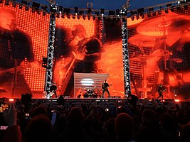

 Metallica je americká metalová skupina založená v roce 1981 v Los Angeles. Skupina se dala dohromady na základě inzerátu v losangeleských novinách, který podal bubeník Lars Ulrich. Jádrem skupiny jsou bubeník Lars Ulrich, zpěvák a doprovodný kytarista James Hetfield, a sólový kytarista Kirk Hammett. V úloze basového kytaristy se vystřídalo více hudebníků, v současnosti je jím Robert Trujillo. Skupina také dlouho spolupracovala s producentem Bobem Rockem, který produkoval všechna alba od roku 1990 do roku 2003 a pomáhal také jako dočasný baskytarista po odchodu Jasona Newsteda do příchodu Trujilla.
Pro první alba Metallicy jsou typická rychlejší tempa skladeb, agresivní a ve svém stylu i hudebně náročnější kompozice. Tato skutečnost je zařadila společně se skupinami Megadeth, Slayer a Anthrax do „Velké čtyřky“ thrash metalu.
Kapela si dokázala postupně získávat stále větší a větší množství fanoušků v undergroundu, a také přízeň kritiky. Někteří kritici považují album Master of Puppets z roku 1986 za jedno z nejvýznamnějších metalových alb. Skupina dosáhla výrazný komerční úspěch s pátým albem Metallica (známým také jako Black Album), vydaným roku 1991, které debutovalo na 1. místě žebříčku Billboard 200. Tímto albem se kapela počala ubírat směrem ke střednímu proudu. Celosvětového ohlasu dosáhly singly „Fade to Black“, „Master of Puppets“, „Welcome Home (Sanitarium)“, „One“, „Enter Sandman“, „The Unforgiven“, „Nothing Else Matters“, „Fuel“ a „Whiskey in the Jar“.
V roce 2000 Metallica, spolu s několika dalšími umělci, zažalovala společnost Napster za sdílení materiálu chráněného autorskými právy bez souhlasu členů kapely.[2] Spor se skončil dohodou a z Napsteru se stala placená služba.
Album St. Anger, vydané v roce 2003, navzdory debutu na 1. místě žebříčku Billboard 200, zklamalo některé fanoušky, kterým chyběla kytarová sóla a vadily „plechové“ bicí. Dokument s názvem Some Kind of Monster přiblížil fanouškům proces nahrávání alba.
Metallica doposud vydala deset studiových alb, čtyři živá alba, šest EP, dvacet pět videoklipů a šestačtyřicet singlů. Skupina vyhrála osm cen Grammy[3] a jako jediné kapele v historii se jí podařilo bodovat v albovém žebříčku Billboard 200 na prvním místě s pěti po sobě následujícími alby.[4] Album Metallica (1991), z kterého se v USA prodalo více než 15 miliónů kopií (22 mil. celosvětově), je 25. nejprodávanějším albem v USA.[5] V období, kdy vyšlo jejich předposlední album Death Magnetic (2008) se celkový počet prodaných nahrávek odhadoval na více než 100 miliónů. K září 2008 byla Metallica pátým nejlépe se prodávajícím hudebním interpretem, od 25. května 1991, kdy začal informační systém SoundScan sledovat prodejnost nahrávek. Za sledované období prodala Metallica jenom v Spojených státech 50 111 000 alb.[6]
V roce 2009 byla skupina uvedena do Rock and Roll Hall of Fame. Úvodní slovo ceremoniálu přednesl Flea.[7]